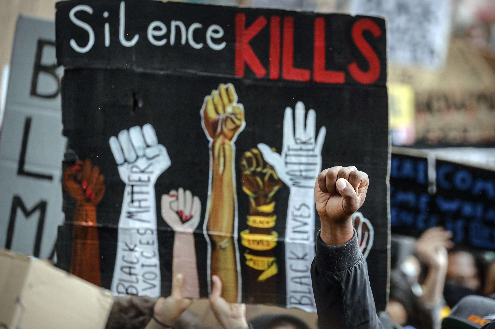
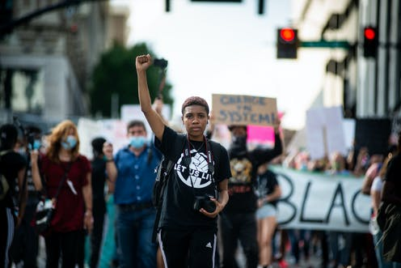
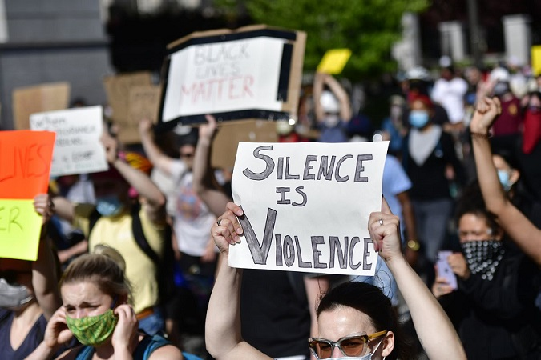

Sign Petitions. Be a Part of the Change.
Defund the Police
Police brutality has gone far enough. Join the movement to defund the police and put the money towards helping black communites flourish and grow. Sing the petition now: https://blacklivesmatter.com/defundthepolice/
The Hands Up Act
People of color should not have to be afraid of being brutaly murdered by police officers. Unarmed black people are constantly hurt and killed by police officers who have no reason for doing so. Politician Travis Washington proposes the Hands Up Act, which would send police officers to jail for 15 years if they shoot someone who is unarmed. This would force police officers to proceed with caution, instead of employing frivolous violence. Sign here: https://www.change.org/p/us-senate-hands-up-act
Contract for Black America
Under the NAACP's #WeAreDoneDying, this petition aims to give every student of color access to good education, implement police reform, create affordable haalth care for everyone, and address economic challenges facing the black community. Sign here: https://www.naacp.org/campaigns/we-are-done-dying/
Justice for George Floyd
This petition, under the NAACP's #WeAreDoneDying, calls for severe police reform, including a zero-tolerance policy for dealing with police officers who attack unarmed people. The petition also calls for the appointment an independent special prosecutor to investigate the murder of George Floyd. Sign here: https://www.naacp.org/campaigns/we-are-done-dying/
National Action Against Police Brutality
This petition urges officials, specifically the attorney general, to address the widespread "epidemic" that is police brutality and take action in response to biased actions by the police. https://www.change.org/p/national-action-against-police-brutality-and-murder
Stand With Breonna
Police murdered Breonna Taylor in her own home during an illegal drug raid "at the wrong address for a person they had already arrested earlier that day." The police officers still have not been charged, and this petition calls for Attorney General Daniel Cameron to convict these police officers. Sign here: https://www.standwithbre.com/
Justice for Ahmaud Arbery
Ahmaud Arbery was killed while jogging by two white men who thought Arbery looked like a burgalar. This petition calls for these men to be charged with murder, especially because if two back men were to kill a white jogger, they would be convicted immediately. This exemplifies the racism in our justice system. Sign here: https://www.change.org/p/human-rights-campaign-justice-for-ahmuad-arbery